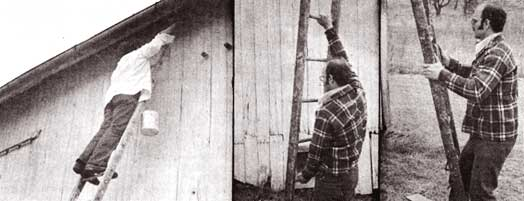
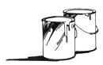

House Painting
If you really want to help "Keep America Beautiful . . . learn the house-painting business! You'll find, as I did, that the venture can bring you a good income and many fringe benefits: outdoor work, varied location, a choice of hours and plenty of chances to meet new and interesting people. You'll also have the satisfaction of performing a valuable service. A home, after all, is a lifetime investment, which its owner wants to protect.
By Joel Ellis
July/August 1974
If you really want to help "Keep America Beautiful". . . learn the house-painting business! You'll find, as I did, that the venture can bring you a good income and many fringe benefits: outdoor work, varied location, a choice of hours and plenty of chances to meet new and interesting people. You'll also have the satisfaction of performing a valuable service. A home, after all, is a lifetime investment which its owner wants to protect.
HOW TO GET PAINTING JOBS
Of all the good, inexpensive ways to hustle painting jobs, the best is word of mouth: One satisfied customer tells another . . . and the system goes to work for you as soon as you've got a first assignment in a given neighborhood. A nearby homeowner sees you in action, approaches casually, asks a few questions . . . and just minutes later you may be across the street at his place, looking over a potential job. One paint crew will often get two or three homes to do, all in the same block.
First, though, you've got to get that original contact. Use as many free sources of publicity as possible . . . for instance, the community bulletin boards in supermarkets and laundromats.
Your hand-printed bulletin board notices should be worded to appeal to a particular neighborhood. "Student seeks house-painting jobs" is often a good approach (people seem to think that student labor comes cheap). An offer of "free estimates" is also attractive, since it assures the potential customer that he won't be ripped off. On the bottom of the note write the phrase "House Painter" and your phone number, vertically, eight or ten times and cut between the slips. Tear off a few to make business look good.
If your local radio station or newspaper has a swap service, get yourself listed (or take a three-line ad in the classified section of the paper for $3.00 to $5.00).
Another good source of jobs and information is a local paint store . . . one that carries a good, reliable line and does a high volume of business. A friendly management can help you get started by giving you a lead in return for using their products.
In many cases, the firm that supplies your materials will also open an account for you so you can paint now and pay later.
ABOVE, FROM LEFT: Use a wire hook to hang the bucket of paint on your ladder. If you tote your equipment in boxes... you can stand on the
containers as you work! Haul your ladders on a car-top ladder... and don't forget a red flag on the back if they're longer than the vehicle.
ESTIMATES
A good paint store can also be of assistance with your first estimate. Some of the larger firms have special representatives who advise customers about their problems during the summer home-improvement season. If you can, get one of these troubleshooters to help you size up your first job . . . and ask him how he does it.
Once you've painted a few houses you'll have a feel for the most important part of preparing an estimate: figuring how long the work will take. Remember to allow for the following hassles:
Unboxed eaves (these will slow up even the most experienced painter).
Dormers that have eaves and siding.
French windows, with their many panes.
Patios.
Awnings which must be removed.
Necessary minor repairs.
Small leaks. If you spot one of these, recommend caulking over the defective seam. The suggestion can save the customer
more expensive mending in the future, and shows that you're concerned.
Bad surface. If the house's old paint is peeling off, check with the owner and plan time and materials for scraping and spot
priming (or a complete primer coat).
I estimate a job one side at a time: two man-hours for the eaves, two and a half for the peak, two for the windows, four for the space above, below and between the windows.
An estimate without a firm price is satisfactory to some homeowners. If you're asked for a set figure, be wise, reckon in all the problem areas and leave yourself enough time to cover any hang-ups.
Some customers want a contract price, a requirement which brings you into competition with other painters. Only you can set your rate because only you know how valuable your time is and how well you estimate. The time/dollar ratio you arrive at will determine your dollar-per-hour figure. If you feel insecure about such a formula, however, call a painter for an estimate and ask for his hourly charge.
MATERIALS
You should come to an agreement with your potential customer about what is included in the job and who is going to supply the materials. You can obtain the paint and either have it charged directly to the homeowner or added to your estimated bill. Either way, always buy first-grade, high-quality products. Good paint can make you look good, so don't cut corners here. Sometimes, though, the customer has his own ideas about what brands are best. Even though it's you that has to use the stuff, be tolerant.
Here's a checklist of other items you'll need, and some comments on choice of materials:
[1] Brushes . . . perhaps second in importance only to the paint itself. The best tool gives the best results (and lasts an extra painting season, too). I like a 2-1/2-inch-wide nylon brush with a round handle. This size can cover narrow siding and-due to its length-spread to reach a wide swath. Larger widths get heavy as the day goes on.
Nylon holds its shape and cleans up well . . . but to keep any good brush in top condition requires care. Some painters prefer to suspend-not stand-their brushes in thinner and linseed oil overnight and shake them out in the morning. Others wash them in oleum immediately after use. In either case, make sure the tool's bristles are well cleansed to prevent hardening.
[2] Spirits of oleum (for cleaning and thinning).
[3] Ladders. I suggest a 6-to-8-foot stepladder and a 12-to-14-foot extension type (or you may need a 24-footer). My preference is wood, for good reason: In windy weather your support can sometimes get away from you and do some undesirable moving. If the ladder is aluminum-and comes in contact with a powerline-you have a good chance of being on the evening news.
[4] Dropcloths. At one time the professional house painter's only option was expensive light canvas. Now there's also plastic, which is cheap and repels paint effectively but does have disadvantages (it tears and doesn't drape as nicely over bushes). You can use old sheets if you prefer.
[5] Scrapers. A one-and-a-half or two-inch Red Devil scraper, kept sharp with a file, can save you time and make the tedious job of surface preparation a breeze. Putty knives and razor-blade scrapers are also handy to have around.
[6] Rags.
[7] Used nylon stockings, a good supply. When paint gets scummy and kind of skaggy-looking hold a piece of nylon over an empty bucket and pour the lumpy liquid through the fabric. Voila, a free strainer and a use for a discarded item. (A little splash of oleum on top of the contents before the can is closed for the night will help prevent the problem.)
[8] Simple tools: hammer, nails, adjustable wrench, pliers, wire cutter, screwdriver, file (for sharpening the scraper).
[9) Wire (a few coathangers will probably do) . . . handy for hanging paint buckets on the ladder.
[10] Old newspapers.
[11]Small box (wooden case or milk container) for carrying supplies in and standing on.
[12] Safety glasses.
[13] Painting clothes: hat, shirt and pants or overalls. The traditional dress of the painter is white, for the very good reason that it helps keep you cool in the sun. A loose white shirt from the Red Shield or Goodwill store should last a painting season. If you really get into the business and want to look professional, white painting overalls are a fine investment. They're roomy, with plenty of stowage for tools and cloths.
[14] Shoes. Your footwear should have steel shanks so your feet won't wrap around the ladder as if you were trying to hold on with them.
ON THE JOB
Before you start operations, it's best to establish a safe, undisturbed place as a storage area for paint and brushes. Spread the spot with newspapers first.
Then you can get on with the job of preparing the building's surface in the manner you previously agreed on with the homeowner. In some cases, you'll have to do a vigorous allover scraping with the help of all hands on the paint crew. Remember, at such times, that chips of the old coating can be a nuisance in rose bushes and your eye. Plan ahead and protect.
Try to avoid using a torch or a power sander to remove oil paint. That's along, hard job and will probably take more time than you expect.
Minor repairs are best made at this point. If you come on bad siding or loose or weak eave troughs that weren't spotted in your original inspection, report the problem to the owner and hope to solve it without changing your estimate.
With the preliminaries out of the way, the painting can begin. Always start with the under-eaves at the topmost point and work downward.
How do you reach the upper siding on a house of two or more stories? One way is to use two extension ladders and ladder jacks with an extension plank. This arrangement takes teamwork to set up, is somewhat cumbersome to move and may consume more time than it saves. The alternative is to give each painter his own ladder and let him move as needed. With a little practice, a person can cover a large area in this manner.
Now a few miscellaneous hints to make the job easier and the results more professional:
If you have any question about whether some area should be painted, your best motto is, "if in doubt, leave it out." You can always go back and do the section later.
As the work proceeds, be careful of lap marks . . . the visual buildups that sometimes result when an ending and a beginning section meet. In particular, avoid painting in the sun (which can dry the coat too quickly and cause this problem). If you do find yourself in a sunny spot, feather out the ends of your strokes: that is, draw the paint out to a thin disappearing streak on uncovered wood. This will help prevent the unsightly lap.
Then there's the business of keeping the paint where you want it. Nothing ruins a job like spots on shingles, driveway, mailbox and porch lights. A little effort and a discreet use of dropcloths will keep the surrounding vegetation and other uncoated areas in their original condition. If a spill should occur-and it will-clean up at once. (Moral: Never carry more paint than you care to mop up.)
When you're working on a dormer, you need a dropcloth on the roof plus a few rags to catch any chance drips. Some nails driven into a convenient place to hold the paint container should help to prevent major spills.
A window-trimming brush and a little practice will enable you to keep paint off glass and screening. If a drop does splat on a screen, dip a short, stiff-bristled brush into a small can of oleum, dab the spot and clean up with a cloth.
When in confrontation with flying, stinging creatures (hornets, wasps, etc.), retreat. It's handy to know that such beast are in a better mood-and fly slower-in the morning. If your presence enrages them even at that hour, take along a knotted rag for self-defense. A quick flick will deflect a marauder, knocking it to the ground and dazing it for a few precious minutes.
Finally, rest periods should be taken in an orderly manner so as not to look like a demonstration in progress on the customer's lawn.
Before you know it, you'll be a veteran painter who looks at houses in terms of jobs: "That's a $250 place . . . that one would go $400." How much you can make in a season depends on a lot of variables, but one thing is certain: a summer of house painting can supply a good chunk of winter survival money. And, once you've got your hand in, you can always fall back on this useful skill when you need cash.
HOW MUCH PAINT WILL YOU NEED?
ARTHUR C. BERARD
Here are some suggestions to help you estimate how much paint to buy for a given job:
[1]1 Compute the number of square feet of surface to be covered: First determine the distance around the house, in feet. Then find the average height to the eaves and add two feet to that figure. (This automatically takes care of the paint you'll need for the gables.) Finally, multiply the former result by the latter.
[2] Ascertain from your paint dealer approximately how many square feet each gallon of undercoat covers. Then divide the total area by this figure.
[3] Similarly, learn the coverage of a gallon of topcoat house paint and divide as in [2] .
Example: Let's say the house is 20 by 40 feet with an average height to the eaves of 13 feet. Multiplying 120 (the perimeter) by 15 (average height to eaves plus two feet), we find that the surface area is about 1,800 square feet. A good grade of undercoat or primer covers about 450 square feet per gallon, and a top-quality house paint covers 500 square feet per gallon. A little simple arithmetic reveals that four gallons of undercoat and three and a half of house paint are needed.
Before you place your order, however, there's another factor to be considered: the condition of the surface. If it's unusually rough, heavily textured, dry or porous, it may require 20% more paint for the first coat. Remember also that corrugated metal requires one-third more paint than usual because there's more area to cover per square foot. For the same reason, narrow-lap siding uses up to 10% more paint than wide.
No matter what kind of surface you're painting, allow 48 hours' drying time between coats.
 ABOVE, FROM LEFT: Use a wire hook to hang the bucket of paint on your ladder. If you tote your equipment in boxes... you can stand on the containers as you work! Haul your ladders on a car-top ladder... and don't forget a red flag on the back if they're longer than the vehicle. |
 ABOVE FROM LEFT: Hang your bucket on the side of the ladder nearest your paintin' arm for easiest access. A wide grasp on the rungs provides the most controlled lift. Brace the lower rung on your thigh for best leverage and you'll be able to ease your ladder up against the house. |
 |
|
 |
 |
|